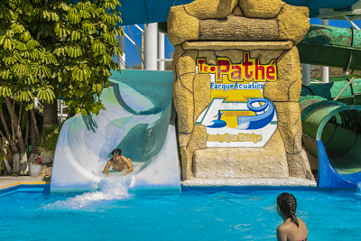

ALBERCA FAMILIAR

Es un área de esparcimiento familiar, cuenta con cinco chapoteaderos laterales y una alberca central de 1.5 m. de profundidad. Cada chapoteadero cuenta con un relajador para masaje corporal.
Esta área es una de las más visitadas por el turismo ya que la temperatura de sus aguas es de las más agradables. Las medidas de esta área son: 1.5 m. de profundidad, 450 m2., capacidad para 320 personas.
ALBERCA MARIPOSA

Es otra de las áreas infantiles con que cuenta el parque, donde podrás compartir con tus pequeños la diversión y el sano esparcimiento que te brinda esta área.
De igual manera cuenta con 4 toboganes de 40 m. de longitud especial para los peques.
Las especificaciones de esta sección son:Profundidad 50 cm., capacidad para 600 personas, 4 chapoteaderos de 5x16 m.
KAMILANCHA

Tobogán diseñado para los amantes de la velocidad, con una longitud de 103 m. y una altura de 22 m.
Siente la adrenalina deslizándote a través de este tobogán, y divertirte de manera segura, usando la cámara especial que el parque te facilita para tu protección..
SUPER TOBOGANES

Cuenta con dos áreas definidas, un área para surfear y otra con olas diamante.
Las especificaciones son: Alberca de olas para surfear: 2 m. de profundidad, capacidad 2,772 personas, área de 21x66 m.
Alberca de olas diamante: 1.5 m. de profundidad, capacidad 2,640 personas, área de 20x66 m.
CASTILLO Y GUARIDA PIRATA

Chapoteaderos diseñados especialmente para los chiquillos del hogar, donde podrán desarrollar su imaginación inventando miles de aventuras como solo ellos son capaces de imaginar, cuenta con 13 toboganes y 6 resbaladillas.
Las dimensiones de esta área son 52x52 m. profundidad de 50 cm. y una capacidad para 2000 personas.
ALBERCA CON OLAS

Cuenta con dos áreas definidas, un área para surfear y otra con olas diamante. Está área es conocida como una de las más grandes del estado y de la región.
Las especificaciones son:Alberca de olas para surfear: 2 m. de profundidad, capacidad 2,772 personas, área de 21x66 m.
Alberca de olas diamante: 1.5 m. de profundidad, capacidad 2,640 personas, área de 20x66 m.
REGRESA A LA PAGINA PRINCIPAL